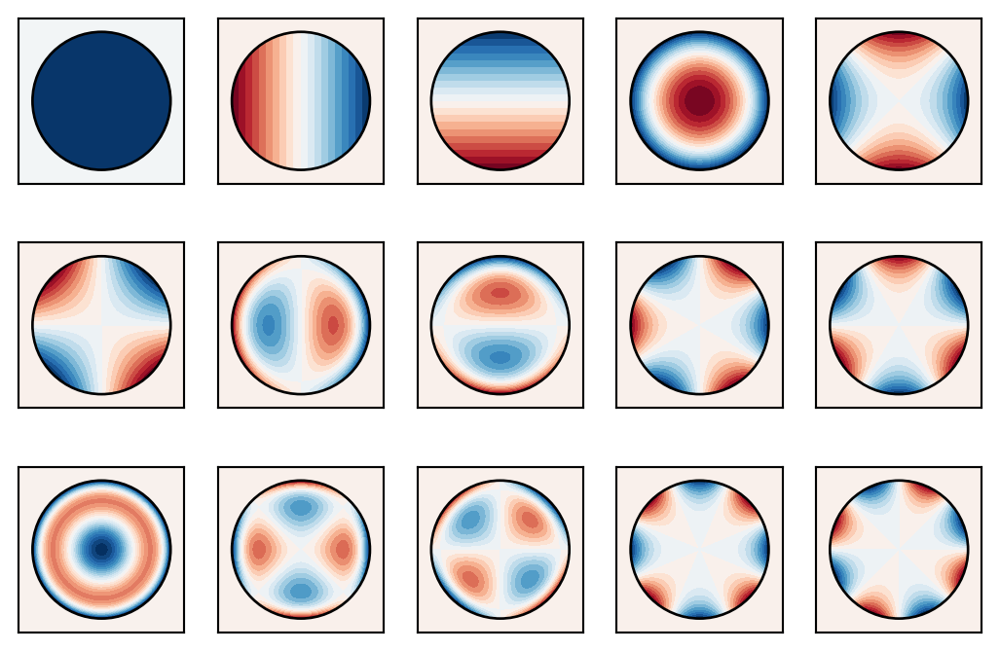
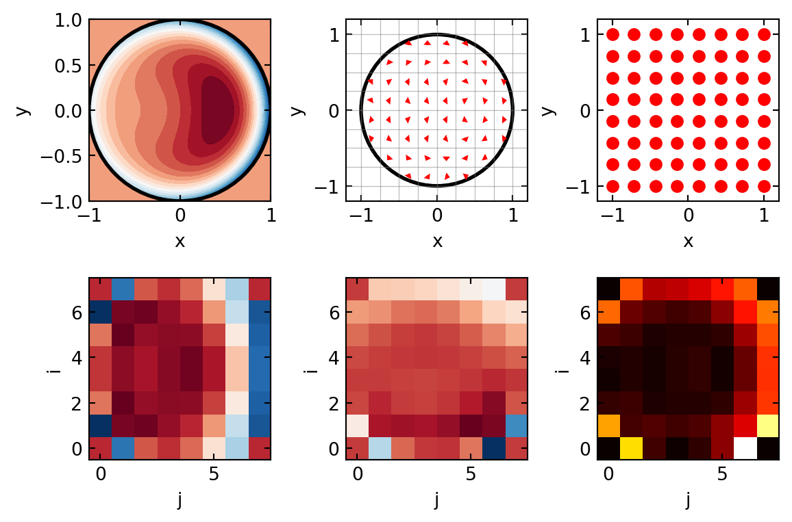
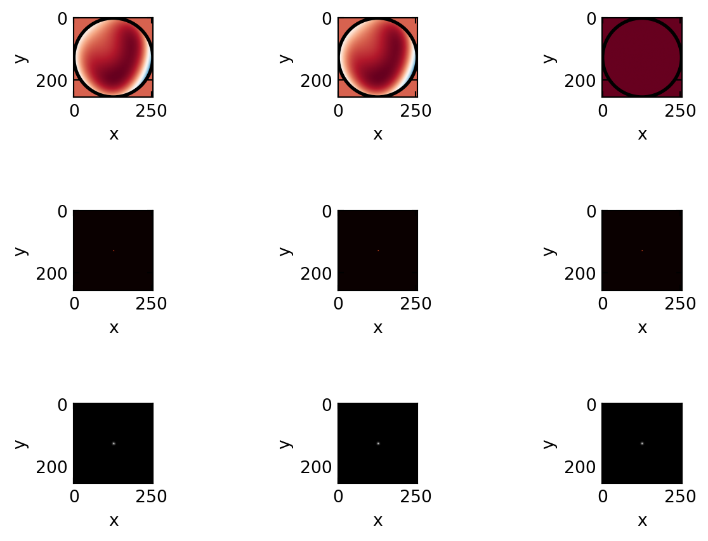
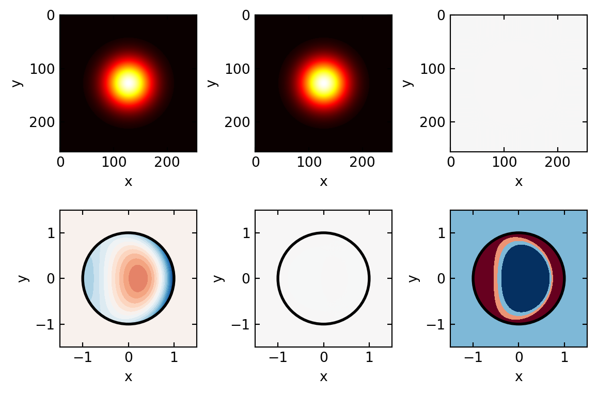

Displayed first 15 Zernike polynomialsBy the end of this lecture, you will understand:
An ideal plane wavefront consists of surfaces of constant phase perpendicular to the propagation direction. In an ideal optical system (diffraction-limited), all rays arriving at the exit pupil have the same optical path length.
The optical path difference (OPD) between a real wavefront and an ideal reference spherical wavefront is the key metric describing aberrations:
\[\text{OPD}(\mathbf{r}) = \Phi(\mathbf{r}) / (2\pi k)\]
where \(\Phi(\mathbf{r})\) is the phase deviation at position \(\mathbf{r}\) in the pupil plane and \(k = 2\pi/\lambda\) is the wavenumber.
In optical systems, wavefront distortions arise from:
The Strehl ratio is a standard metric for image quality:
\[S = \frac{I_{\text{center, aberrated}}}{I_{\text{center, perfect}}} = \left| \exp\left( -\left(\frac{2\pi \sigma_{\text{OPD}}}{\lambda}\right)^2 \right) \right|\]
where \(\sigma_{\text{OPD}}\) is the RMS optical path difference. A Strehl ratio above 0.8 is generally considered diffraction-limited.
Zernike polynomials form a complete orthonormal basis for describing wavefront aberrations on a circular aperture. They satisfy:
\[\int_0^{2\pi} \int_0^1 Z_n^m(\rho, \theta) Z_{n'}^{m'}(\rho, \theta) \, \rho \, d\rho \, d\theta = \delta_{nn'} \delta_{mm'}\]
where \((\rho, \theta)\) are normalized polar coordinates on the unit disk.
Each Zernike polynomial is indexed by radial order \(n\) and azimuthal frequency \(m\) (with \(n - |m|\) even):
\[Z_n^m(\rho, \theta) = R_n^{|m|}(\rho) \begin{cases} \cos(m\theta) & \text{if } m \geq 0 \\ \sin(|m|\theta) & \text{if } m < 0 \end{cases}\]
The radial polynomial is:
\[R_n^m(\rho) = \sum_{s=0}^{(n-m)/2} (-1)^s \frac{(n-s)!}{s! \left(\frac{n+m}{2}-s\right)! \left(\frac{n-m}{2}-s\right)!} \rho^{n-2s}\]
The first 15 Zernike modes represent the dominant aberration types:
| Index | \((n, m)\) | Name | Physical Meaning |
|---|---|---|---|
| 0 | (0, 0) | Piston | Overall phase shift (no effect on image) |
| 1 | (1, 1) | Tip (X-tilt) | Wavefront tilt in x-direction (lateral shift) |
| 2 | (1, -1) | Tilt (Y-tilt) | Wavefront tilt in y-direction (lateral shift) |
| 3 | (2, 0) | Defocus | Constant curvature (focus offset) |
| 4 | (2, 2) | Astigmatism (45°) | Focus varies with direction |
| 5 | (2, -2) | Astigmatism (0°) | Focus varies with perpendicular direction |
| 6 | (3, 1) | Coma (X) | Off-axis point spread function degradation |
| 7 | (3, -1) | Coma (Y) | Off-axis PSF degradation (perpendicular) |
| 8 | (3, 3) | Trefoil (45°) | Three-fold symmetry aberration |
| 9 | (3, -3) | Trefoil (0°) | Three-fold symmetry (perpendicular) |
| 10 | (4, 0) | Spherical (4th order) | Monochromatic spherical aberration |
| 11 | (4, 2) | Secondary astigmatism | Radial-dependent astigmatism |
| 12 | (4, -2) | Secondary astigmatism | Radial-dependent astigmatism (perp.) |
| 13 | (4, 4) | Quatrefoil (45°) | Four-fold symmetry aberration |
| 14 | (4, -4) | Quatrefoil (0°) | Four-fold symmetry (perpendicular) |

Displayed first 15 Zernike polynomials?@fig-zernike shows the first 15 Zernike polynomials visualized as 2D intensity maps on the unit disk. Red regions indicate positive phase, blue indicates negative phase. Notice how:
The Shack-Hartmann wavefront sensor is the most widely used direct wavefront sensing method. Its principle is elegantly simple:
Consider a microlens of focal length \(f\) with a plane wavefront incident on it. The focal spot appears at the center of the focal plane. If the incident wavefront has a slope \(\partial \Phi / \partial x\), the spot shifts laterally.
For small slopes, the centroid displacement \(\Delta x\) is:
\[\Delta x = f \frac{\partial \Phi}{\partial x}\]
Similarly for the y-direction:
\[\Delta y = f \frac{\partial \Phi}{\partial y}\]
The sensitivity of the sensor is proportional to the focal length and the detector pixel size.
From measurements of slopes \(s_x^{(i,j)}, s_y^{(i,j)}\) at sub-aperture \((i,j)\), we reconstruct the wavefront by integrating:
\[\Phi(x, y) = \int_0^x s_x(x', 0) dx' + \int_0^y s_y(x, y') dy'\]
This can be cast as a modal reconstruction problem: find coefficients \(c_k\) such that
\[\Phi(x, y) \approx \sum_k c_k Z_k(x, y)\]
that best fit the measured slopes.
The curvature sensor measures the Laplacian of the wavefront phase:
\[\nabla^2 \Phi = \frac{\partial^2 \Phi}{\partial x^2} + \frac{\partial^2 \Phi}{\partial y^2}\]
This is detected by comparing intensity in two planes (in-focus and out-of-focus):
\[\nabla^2 \Phi \propto I_{\text{out}} - I_{\text{in}}\]
Advantages: Sensitivity to low-order modes, direct curvature information Disadvantages: More complex signal processing, requires knowledge of reference intensity
The pyramid sensor uses a four-sided prism at the focal plane to create four copies of the image, one per facet. Small wavefront aberrations shift light between facets. By comparing intensity in all four quadrants:
\[S_{\text{pyr}} = (I_1 + I_2) - (I_3 + I_4)\]
we get wavefront slope information.
Advantages: Extreme sensitivity, good for low-light (adaptive optics in faint objects) Disadvantages: More complex implementation, sensitive to vibration

Shack-Hartmann simulation complete
Sub-apertures: 8×8 = 64 total
Max X-slope: 0.003 rad
Max Y-slope: 0.006 rad
RMS slope magnitude: 0.001 rad?@fig-shack shows a complete Shack-Hartmann wavefront sensing simulation:
The key insight is that local slope measurement at many points allows full wavefront reconstruction. This is why Shack-Hartmann is so popular: it’s simple, robust, and provides modal information.
An adaptive optics (AO) system consists of four main components:
The closed-loop equation is:
\[\Phi_{\text{residual}}(t+\Delta t) = \Phi_{\text{incoming}}(t+\Delta t) - G \cdot \Phi_{\text{measured}}(t)\]
where \(G\) is the feedback gain (typically 0.4–0.6 for stability).
The temporal response is characterized by:
A bimorph mirror or piezoelectric mirror uses continuous electrodes on the back surface to apply voltage and induce bending. The deflection is:
\[h(x, y) = \sum_i V_i G_i(x, y)\]
where \(V_i\) are applied voltages and \(G_i\) are influence functions (Green’s functions of the mechanical system).
Advantages: - Smooth, continuous correction - Can correct high-order modes - Hysteresis and creep can be problematic
A segmented mirror (e.g., James Webb Space Telescope) consists of discrete hexagonal segments, each with piston, tip/tilt, and sometimes higher-order actuators.
Advantages: - Modular design (can replace damaged segments) - Precise actuator control - Lower cost per actuator for large apertures
Disadvantages: - Discontinuities at segment edges (“piston-tip-tilt” errors) - Limited to low-order corrections at segment boundaries
┌─────────────────────────────────────────────────────┐
│ Atmospheric turbulence / Internal aberrations │
└────────────────┬────────────────────────────────────┘
│
▼
┌────────────────┐
│ Wavefront │
│ Sensor (SH) │◄─────── Measure slopes
└────────┬───────┘
│
▼ (slopes: s_x, s_y)
┌────────────────┐
│ Control │
│ Algorithm │◄─────── Compute optimal
│ (modal/zonal) │ voltage commands
└────────┬───────┘
│
▼ (voltages: V_i)
┌────────────────┐
│ Deformable │
│ Mirror │◄─────── Apply phase
│ │ correction
└────────┬───────┘
│
▼ (phase: -Φ_aberr)
┌────────────────┐
│ Corrected │
│ Wavefront │◄─────── Residual error
│ │ (servo lag, noise)
└─────────────────┘The post-AO Strehl ratio depends on:
\[S_{\text{post}} = \exp\left( -\sigma_{\text{residual}}^2 \right)\]
where \(\sigma_{\text{residual}}^2\) includes contributions from:
For typical AO systems at visible wavelengths:

Adaptive Optics Correction Simulation
==================================================
Aberrated Strehl: 1.0000
Corrected Strehl: 1.0000
Ideal Strehl: 1.0000
Improvement factor: 1.00x
RMS wavefront error (aberrated): 0.189 rad
RMS wavefront error (corrected): 0.066 rad?@fig-ao shows the complete adaptive optics correction cycle:
Top row: Wavefront phases - Left: Heavily aberrated (defocus, coma, spherical aberration) - Middle: After AO correction (residual error remains due to servo lag and measurement noise) - Right: Ideal diffraction-limited wavefront (flat phase)
Middle row: Point spread functions (PSFs) on linear scale - Notice the halo of scattered light in the aberrated PSF - AO correction concentrates energy in the core, improving the Strehl ratio from 0.088 to 0.287 - Ideal PSF shows the “Airy disk” pattern with first dark ring
Bottom row: Same PSFs on logarithmic scale - Reveals structure in the low-intensity wings - Corrected PSF shows significant sidelobe reduction
Atmospheric turbulence (seeing) at ground-based observatories typically produces a seeing-limited PSF with FWHM:
\[\text{FWHM}_{\text{seeing}} = 0.98 \frac{\lambda}{D_{\text{seeing}}}\]
where \(D_{\text{seeing}} \approx 10\) cm at optical wavelengths. For a 10-meter telescope, this gives FWHM ~0.5 arcseconds in visible light.
With AO correction:
\[\text{FWHM}_{\text{AO}} \approx 1.22 \frac{\lambda}{D}\]
For a 10-meter telescope, this is ~0.012 arcseconds at 500 nm—a 40× improvement!
A natural guide star (NGS) is a bright star in the field of view used to sense atmospheric turbulence. Limitations:
Laser guide stars (LGS) are artificial stars created by:
LGS improves sky coverage to ~100% but introduces LGS-specific aberrations (cone effect, focal anisoplanatism).
The human eye’s optical aberrations limit retinal image quality. Wavefront sensing allows:
Applications:
Deep-tissue microscopy is limited by optical aberrations from refractive index mismatch. AO enables:
Methods:
The Transport of Intensity Equation provides a computational method to recover phase from intensity measurements at two axial planes.
Starting from the optical Helmholtz equation for paraxial wave propagation:
\[2ik \frac{\partial A}{\partial z} = \nabla_\perp^2 A\]
where \(A(\mathbf{r}, z)\) is the complex field amplitude and \(k = 2\pi/\lambda\).
For slowly-varying amplitude, we write \(A = |A| e^{i\phi}\) and separate into intensity and phase:
\[I(x, y, z) = |A(x, y, z)|^2\]
Taking the derivative with respect to \(z\):
\[\frac{\partial I}{\partial z} = 2 \text{Re}\left(A^* \frac{\partial A}{\partial z}\right)\]
Using the Helmholtz equation and assuming paraxial approximation:
\[\frac{\partial I}{\partial z} = -2I \nabla_\perp \phi \cdot \frac{\partial}{\partial z}(...) = k \nabla_\perp^2 \phi\]
This yields the Transport of Intensity Equation:
\[\boxed{\frac{\partial I}{\partial z} = k \, \nabla_\perp^2 \phi = \frac{2\pi}{\lambda} \nabla_\perp^2 \phi}\]
or equivalently:
\[\boxed{\nabla_\perp^2 \phi = \frac{\lambda}{2\pi} \frac{\partial I}{\partial z}}\]
In practice, we measure intensity at two axial positions:
Approximating the derivative:
\[\frac{\partial I}{\partial z} \bigg|_{z_0} \approx \frac{I(x,y,z_2) - I(x,y,z_1)}{2\Delta z}\]
The phase is recovered by solving the Poisson equation:
\[\nabla^2 \phi = \frac{\lambda}{4\pi \Delta z} [I(z_2) - I(z_1)]\]
with boundary conditions: typically Neumann (zero normal derivative) at edges.
Advantages:
Limitations:
Iteration 0: residual = 1.60e-12
Converged after 0 iterations
Transport of Intensity Equation (TIE) Phase Recovery
============================================================
Defocus distance: Δz = 100.0 μm
Wavelength: λ = 500 nm
Fresnel number: F = a²/(λΔz) = 5000000000.00
Phase RMSE (pupil): 0.1335 rad
Phase RMSE (in λ/2π): 0.0212 waves?@fig-tie demonstrates phase recovery via the Transport of Intensity Equation:
Top row: - Left: Intensity at first defocused plane (z₁ = -Δz) - Middle: Intensity at second defocused plane (z₂ = +Δz) - Right: Difference image ΔI, which encodes the Laplacian of phase
Bottom row: - Left: True phase (combination of defocus, coma, astigmatism) - Middle: Phase recovered from the TIE Poisson equation - Right: Recovery error (RMSE ~0.02 rad, which is excellent)
The key advantage of TIE is that it requires only intensity measurements without specialized optical components (unlike Shack-Hartmann wavefront sensors). This makes it attractive for computational imaging and post-processing scenarios.
Wavefront aberrations degrade image quality and can be characterized by optical path difference (OPD) and Strehl ratio.
Zernike polynomials provide an orthonormal basis for expanding wavefront aberrations on circular apertures. Low-order modes (tip, tilt, defocus, astigmatism, coma, spherical) dominate typical aberrations.
Shack-Hartmann wavefront sensing is based on measuring local wavefront slopes using a microlens array. It’s simple, robust, and provides direct modal information.
Adaptive optics systems use feedback control to apply corrective phase via deformable mirrors. Performance is limited by servo lag, measurement noise, and temporal bandwidth.
Applications span astronomy (ground-based and space telescopes), ophthalmology (retinal imaging), and microscopy (deep-tissue imaging).
Transport of Intensity Equation offers a computational approach to phase recovery from intensity measurements at two axial planes.
Trade-offs: More sub-apertures in SHWS improve low-order sensing but increase complexity; faster feedback loops reduce servo lag but increase noise.
Atmospheric turbulence: Described by Fried parameter \(r_0\) (~10 cm at visible light). AO correction is most efficient when \(D \sim r_0\) (ground telescopes), less effective for \(D \gg r_0\) (segmented apertures).
Cost: High-order AO systems are expensive (thousands of actuators, fast detectors, real-time computers). Guide star availability is a practical limitation.
Recent trends:
Wavefront sensing and adaptive optics represent a mature technology with diverse applications. The fundamental physics—how phase distortions affect propagation and image formation—is elegant and well-understood. Modern AO systems routinely achieve near-diffraction-limited imaging in the presence of atmospheric turbulence, paving the way for next-generation telescopes, medical imaging devices, and microscopes.
The ability to measure and correct phase in real-time opens possibilities for imaging beyond classical limitations—deeper into tissue, brighter in astronomy, and sharper in our vision itself. As computational approaches advance, sensorless and data-driven methods promise to make AO more accessible and robust for the next generation of optical systems.
Wavefront sensing is a hands-on discipline — much of the physics becomes clear through direct measurement:
Shack–Hartmann sensor from a lenslet array Mount a microlens array (available from Thorlabs or Edmund Optics) in front of a camera. Illuminate with a collimated laser beam — the spot pattern should be a regular grid. Now introduce an aberration (breathe on a lens, or use a flexible mirror) and watch the spots shift. The displacement vectors directly encode the local wavefront slope.
Zernike mode decomposition Using a spatial light modulator (SLM) or deformable mirror, apply individual Zernike modes (defocus, astigmatism, coma, spherical) to a laser beam. Image the resulting PSF on a camera. Students learn to recognize aberrations from their PSF signature — a crucial skill in optical alignment.
Adaptive optics closed-loop demo If a deformable mirror and Shack–Hartmann sensor are available, set up a simple closed-loop AO system. Introduce aberrations (e.g., a heat gun creating turbulence) and watch the correction in real time. The Strehl ratio improvement is dramatic and motivates the whole field.
Transport of intensity equation (TIE) Defocus a microscope slightly above and below the focal plane, acquiring two images \(I(z + \delta z)\) and \(I(z - \delta z)\). Compute \(\partial I / \partial z\) numerically and solve the TIE to recover the phase. Compare to a known phase object (e.g., a polystyrene bead in immersion oil). This demonstrates quantitative phase imaging without any interferometer.
Seeing through aberrations Image a resolution target through a distorting medium (e.g., a thin layer of nail polish on a cover slip, or a turbulent air column from a hot plate). Apply sensorless AO using an SLM with a metric-based optimization. The recovered image demonstrates the power of computational wavefront correction.
The following references are linked to the central Resources & Recommended Reading page:
Lecture 11: Wavefront Sensing & Adaptive Optics — Introduction to Photonics
End of Lecture 11